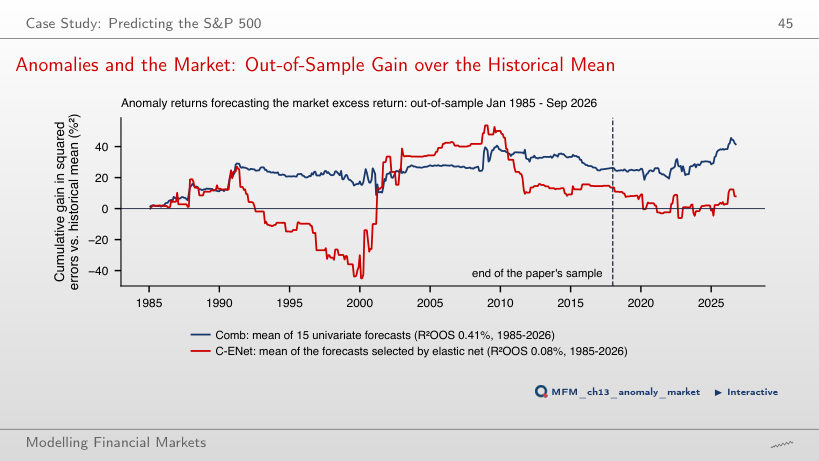

The slide of the lecture is on the left, the same figure on the right, computed in the browser from the same data. The ▶ button moves the parameter step by step.
What Can Machine Learning Predict in Finance? · A Minimal Machine Learning Toolbox · Features: Fractional Differencing and Its Pitfall · Labels: What Exactly the Model Learns · Honest Validation · Case Study: Predicting the S&P 500 · Selection and Backtest Overfitting · Machine Learning for Inference · Research Frontier: Structure before Flexibility
What Can Machine Learning Predict in Finance?
What Is Predictable? Direction vs. Risk

Answer
For |r_t|, autocorrelation is 0.29 at lag 1 and 0.16 at lag 40; all 40 lie outside the ±0.024 band. For returns, the first-order autocorrelation is −0.10, and 13 of 40 lie outside the band. Low linear autocorrelation does not imply independence, and taking absolute values does not simply square the ACF. The result indicates persistence in return magnitudes. The ±0.024 band is a pointwise i.i.d. reference, not a simultaneous band robust to heteroskedasticity.
A Minimal Machine Learning Toolbox
LASSO Regularisation Path

Answer
The first feature is ffd_price. vol_20 has the largest absolute coefficient at a weak penalty, which does not determine entry order. First-order return autocorrelation does not determine it either. The truncated FFD filter retains a component proportional to the log-price level. Early entry does not establish predictive skill: mean purged-CV AUC, with the scaler estimated in each fold, ranges from 0.476 to 0.486 across penalties with at least one non-zero coefficient.
Features: Fractional Differencing and Its Pitfall
The ADF Statistic Along d: S&P 500

Answer
ADF with one lag rejects: −2.96 < −2.86. With 34 AIC-selected lags, the statistic is −0.72 and does not reject. Neither decision is a proof. The structural argument is that, for an I(1) log price, a finite filter whose weights sum to 0.178 retains the I(1) component. The 0.98 correlation with the log price is a warning sign, not a stationarity test.
Labels: What Exactly the Model Learns
Triple Barrier: S&P 500 in 2022

Answer
The event ends on day 5 and receives +1. Subsequent price movements do not change its label. The return sign at the horizon is used only when neither horizontal barrier has already been hit; conflicting signs are not cancelled. On the chart, only the March event reaches the profit barrier; the May, August and November events receive +1 from the return sign at the vertical barrier, and the January event hits the stop-loss (−1).
Honest Validation
Purged K-Fold with Embargo

Answer
The number excluded is 2h + e = 15: h = 6 before the block, whose labels end inside the test set, and h + e = 9 after it, i.e. 6 purged and 3 embargoed. The answer 13 updates only the left boundary; 12 omits the embargo. The 20 test observations are not included in this count.
Leakage Experiment: Nothing to Predict

Answer
At h = 20, neighbouring days have overlapping labels and similar features. Shuffling distributes them between training and test. Class imbalance does not explain the difference between evaluations on the same observations, and repeated splitting does not remove this mechanism. Contiguous folds give 50.0%, purging and embargo 49.6%; these values are simulation outcomes, not exact guarantees. With h = 2, shuffled K-fold gives 49.9%; with h = 60 it reaches 84.5%.
Case Study: Predicting the S&P 500
Model Comparison: Fold Means

Answer
No. The always-"up" rule has 58.1%, so the logit is about 0.4 percentage points below the benchmark. Exceeding 50% or ranking ahead of the other three models does not establish superiority over this benchmark. Predicting "up" on 98.3% of days (TP = 3,575, FP = 2,589) indicates proximity to the majority rule; it does not mean the model reproduces that rule exactly. The fold-mean AUCs lie between 0.477 and 0.508.
Walk-Forward Backtest: Results

Answer
No. Sharpe-ratio invariance to scaling concerns multiplying every return by the same positive constant. Switching between positions of 0 and 1 is not such a scaling. In this example, trading at the next close, at threshold 0.5 and a 5 bp cost, the strategy has SR 0.33 and buy-and-hold 0.66. The difference, −0.33, has p = 0.001 (Ledoit–Wolf HAC test). The FFD log price uses d = 0.15, chosen on data up to 2009 only.
Anomalies and the Market: Out-of-Sample Gain over the Historical Mean

Answer
Comb averages univariate forecasts: each univariate slope contributes with weight 1/15. It is not multivariate OLS divided by 15. Combining forecasts can reduce error variance without guaranteeing a gain. Multicollinearity alone does not bias OLS. In this sample, Comb has an R²OOS of 0.41%, versus −7.41% for OLS; the significance of Comb’s gain is sensitive to the HAC lag choice (one-sided Clark–West p 0.045 with 5 lags, 0.063 with 3 lags). In the paper, with 100 anomalies, OLS reaches −2,513.86% and the simple combination 0.89%.
Selection and Backtest Overfitting
The Best of N Zero-Skill Strategies

Answer
About 1.45: the theoretical approximation gives 1.46, and the mean of 200 simulations is 1.43. Zero is the mean for an individual strategy; 0.45 = √(1/5) is its approximate standard deviation. The realised maximum varies across samples. The value rises with N and falls with the sample length.
In-Sample (IS) vs. Out-of-Sample (OOS): Bitcoin Grid Search

Answer
The MA 11/20 rule with a 0% band has an out-of-sample SR of 0.03. The values 0.50 and 0.41 describe group medians (the top 10% in-sample rules and all rules), not this rule’s performance. The Spearman rank correlation between in-sample and out-of-sample SR is 0.13. The decline is consistent with overfitting; comparison with buy-and-hold requires a separate evaluation.
Machine Learning for Inference
Worked Example: Does the VIX Predict S&P 500 Returns?

Answer
With 4 HAC lags, the double-selection interval, [−22.1, 40.8] bp, is about 1.8 times wider. The 15 controls selected for log VIX reduce its remaining variation after adjustment, which can increase the standard error. The methods use the same sample, and both intervals use HAC correction. Coefficient magnitude does not proportionally determine interval width. The [−22.1, 40.8] bp interval does not distinguish the predictive coefficient from zero at the 5% level.
Research Frontier: Structure before Flexibility
Deep Learning in Asset Pricing: Out-of-Sample Sharpe Ratios

Answer
FF5 has a monthly SR of 0.22, with an approximate 95% interval of [0.11, 0.34]. The page uses standard error √((1 + SR²/2)/T), under an i.i.d. Normal approximation. The values 0.75 and 0.15 belong to the paper’s GAN and the replication’s market benchmark, respectively. In the paper, EN achieves 0.50 and FFN 0.44: the regularised linear model outperforms this forecasting network in the reported comparison, without establishing a universal rule about structure and flexibility.
S&P 500 and VIX: daily closes, January 2000 – September 2026; Bitcoin: daily closes from September 2014; EODHD prices. Fama–French factors: Kenneth French Data Library. Sharpe ratios of the SDF models: Chen, Pelger and Zhu (2024), Table I and Table A.VI. Long-short anomalies (factors and decile spreads): Kenneth French Data Library; R²OOS of the paper: Dong, Li, Rapach and Zhou (2022), Table 2.